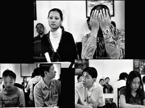

Tiền Phong - Mẹ tôi đã bỏ quê Hưng Yên đi làm dâu một nơi xa lắc, xa bằng những chuyến xe khách hai ngày. Bây giờ tôi chỉ làm dâu xa mẹ ba tiếng đồng hồ máy bay, mà nỗi khắc khoải thương xót như nhân đôi từ đời mẹ truyền lại đời con gái.

Trích bộ ảnh nổi tiếng của Trương Càn Kỳ (Đài Loan)
Lưu ý: Ẳnh chỉ có tính minh họa. Nhân vật trong ảnh không phải là nhân vật trong bài ký sự này. Những đôi vợ Việt chồng Đài tại trung tâm môi giới cô dâu tư nhân TPHCM
Chồng tôi có người tình kém ông vài tuổi.
Nửa năm đầu sống ở Đài Loan, tôi tưởng cuộc đời tôi đã sang trang mới, những cuộc dạo bộ sáng sớm, ăn sáng bên nhau, chồng tôi chở đi tham quan khắp miền Trung của đảo.
Thán là một người đàn ông chăm lo chu đáo, ông tìm địa chỉ những gia đình cưới vợ Việt để chở tôi đến chơi cho đỡ buồn. Ông khoe khắp nơi người vợ trẻ, nhấn mạnh là có tốt nghiệp đại học, không phải loại gái lấy qua môi giới, ông không phải mất tiền!
Đôi khi niềm tự hào của Thán là nỗi ngại ngần của tôi.
Ở Việt Nam, tôi chỉ biết học, sang Đài Loan tôi tập làm người vợ, Thán tận tình chỉ dạy cho tôi mọi điều, từ bếp núc tới chợ búa, thu dọn nhà cửa. Việt Nam là một xã hội đàn bà xoay quay cuồng quanh đàn ông, lúc nào cũng sợ mình chạy không kịp với đòi hỏi của nam giới. Cả đời tôi mới lần đầu tiên nhìn thấy có một người đàn ông như Thán lau nhà, đổ rác, đi chợ, nấu cơm, ủi đồ. Ở Đài Loan tôi mới thấy đàn ông đi mua băng vệ sinh cho đàn bà.
Nhưng Thán lại không thích đi mua băng vệ sinh cho tôi, không phải vì ngại, mà bởi ông luôn giục, có bầu đi, có bầu đi em.
Những buổi chợ đêm làm tôi nhớ nhà da diết. Ở đó tôi gặp nhiều đồng hương, đứng nấp sau những quầy hàng lúc lỉu đồ ăn khô, những bình trà lớn bằng thép ứa ra lớp mồ hôi đá lạnh buốt.
Cô dâu Việt Nam quanh khu chung cư Quế Viên tôi chỉ gặp mặt khi đi đổ rác. Bốn giờ chiều xe rác chạy qua, những người đi đổ rác nếu nói giọng Nam chắc chắn là cô dâu Việt, nói giọng Bắc là ô sin.
Không phải giọng nói ngăn cách chúng tôi, mà là thân phận đã làm chúng tôi ngại ngần.
Trong mắt những bà ô sin thường gọi nhau oang oang trước đầu xe rác, cô dâu Việt là những cô bòn tiền chồng, không chịu lao động nặng nhọc.
Trong mắt những cô dâu miền Nam, sự kiêu hãnh và tự trọng của những bà ô sin thật rỗng tuếch và giả dối. Chẳng phải đều cần tiền như nhau, sao còn chia đẳng cấp.
Quen Thúy, tôi phát hiện cô ấy không bao giờ trả lời những câu hỏi của đồng hương nói giọng Bắc, lấy cớ âm điệu khó nghe, nghe hổng ra. Hoặc giả, chỉ trả lời bằng tiếng Hoa.
Giọng tôi nửa Sài Gòn nửa Hưng Yên. Tôi chới với giữa những định kiến.
Thúy dắt tôi về thăm nhà cô một buổi. Thúy ở trong con ngõ nhỏ cách nhà tôi chừng năm phút đi bộ, phía bên kia công viên giữa phố. Nhà Thúy treo những ảnh gỗ ghép khắp bốn phía tường, những đồ trang trí trong nhà cũng bằng gỗ. Tất thảy màu sơn véc-ni nâu bóng. Nghe nói chồng Thúy cũng mê tín như chồng tôi, ông ta không ưa đồ kim khí.
Tôi nói, vậy nhẫn cưới có bằng gỗ không?
Thúy nói, làm gì có nhẫn cưới dây chuyền, cưới xong bà mối ở Sài Gòn lột hết rồi còn đâu. Nhà Thúy được nhận bốn triệu đồng, coi như xong đời con gái.
Tôi về, Thúy bị chồng tát lật mặt. Chồng Thúy lái taxi, ngoài đường toàn gặp người lạ nên bước vào cửa nhà chỉ chấp nhận người quen. Ai cho cô vợ Việt cái quyền kết bạn mà chưa xin phép chồng?
Thán ngược lại, mỗi lần quen biết ai lấy vợ Việt, Thán thường tìm cách dẫn tôi tới làm quen, trò chuyện hỏi han. Thán thích tám (tán phét) như đàn bà, ông có ưu điểm nổi bật, là không bao giờ đánh vợ.
"Tôi đứng im một lúc để trấn tĩnh, tự nhủ không khóc. Nếu không cả tôi và đứa bé trong bụng sẽ đều ngập ngụa trong nước mắt. Tôi nói, con trai ạ, mẹ quyết định không nạo thai là đúng."
Trong mắt đồng hương, tôi là một kẻ may mắn, họ ít khi tốt nghiệp lớp tám, tôi được học cho tới lúc lấy chồng. Họ bị chồng chọn, tôi được chọn chồng. Mỗi tháng chồng cho 100 đô la gửi về nhà vợ ở Việt Nam đã được coi là may mắn, chồng tôi mỗi tháng cho tôi gấp ba lần, tôi vẫn cất trong tài khoản riêng.
Thế nhưng ngược lại, trong mắt tôi, cuộc sống của một cô dâu Việt bình thường ở quanh tôi lại quá khó hiểu. Được đi học tiếng Hoa không mất tiền tại bất kỳ trường Tiểu học nào, nhưng các cô lại thích ra quán ăn Việt Nam túm tụm mất tiền trên chiếu bạc hơn.
Những buổi chợ đêm Đài Trung náo nhiệt tới bốn năm giờ sáng, chúng tôi đi mỏi chân, thường chọn một quán ăn nhỏ dừng chân ăn bữa đêm. Chồng tôi luôn tìm quán nào có cô Việt Nam đứng bán. Những cô dâu Việt rất dễ nhận ra trong đám đông, bởi làn da kém trắng hơn gái Đài nhưng mượt mà khỏe mạnh, đôi mắt hai mí với gò má cao, và bởi vị trí cố định cắm mặt sau xe hàng ăn.
Người đứng ra phía trước luôn là chồng hoặc mẹ chồng. Nếu không có một trong hai người ấy, tôi đoán cô dâu Việt ấy đã bỏ chồng.
Sau vài năm có quốc tịch Đài Loan, nếu được ra xã hội làm việc hoặc buôn bán, rất ít cô Việt Nam nào còn ở với chồng. Đó là lý do vì sao rất nhiều đàn ông Đài giữ riệt vợ Việt ở trong nhà, như chồng tôi.
Họ không chỉ sợ mất vợ, những người đàn ông ấy còn sợ mất tài sản. Vợ cũng là một trong những tài sản họ tậu được khi trưởng thành.
Và mỗi buổi chợ đêm, tôi luôn nhớ mẹ tôi. Không hiểu sao tôi luôn nhớ mẹ mỗi khi đêm tối, có những ánh đèn bóng đỏ quanh khu chợ. Những ngọn đèn bóng đỏ ngày xa xưa tôi vài tuổi, chỉ nhớ mẹ ở khu kinh tế mới, chờ ba tôi về hàng đêm hàng tuần hàng tháng, xa lăng lắc. Và mẹ ru tôi: "Má ơi đừng gả con xa...".
Mẹ tôi đã bỏ quê Hưng Yên đi làm dâu một nơi xa lắc, xa bằng những chuyến xe khách hai ngày. Bây giờ tôi chỉ làm dâu xa mẹ ba tiếng đồng hồ máy bay, mà nỗi khắc khoải thương xót như nhân đôi từ đời mẹ truyền lại đời con gái.
Tôi không muốn con gái tôi rồi sẽ lại khắc khoải những lúc phương xa, thổn thức "chim vịt kêu chiều" dù quanh đây đâu có con chim nào kêu. Tôi muốn con tôi mạnh mẽ, một người đàn ông, không im lặng, không dị tướng, hài hòa và mãi mãi thuộc về tôi.
An Kỳ đã li hôn. Nhà cô ta ở bên kia chợ đêm Đài Trung. An Kỳ nuôi hai con gái riêng. Chồng tôi đòi cưới nhưng An Kỳ giống như mọi người đàn bà Đài Loan khác, chỉ thích làm người tình, không thích làm vợ. Trong một lần cãi vã, chồng tôi bỏ sang Việt Nam và sau nửa tháng cưới tôi tại Sài Gòn.
Tôi chỉ biết điều đó khi cái thai trong bụng tôi đã được bốn tháng, siêu âm phát hiện ra con trai, chồng tôi như phát điên phát rồ.
Nếu Thán quả thật nhìn thấy được số phận, sao ông vẫn cưới tôi về Đài Loan?
Thán đã có ba đứa con trai với người vợ trước, ông chỉ muốn có con gái. Con gái mang lại phúc lộc cho sự nghiệp thiên văn phong thủy của ông. Phải chăng vì thế mà ông yêu An Kỳ bền bỉ như vậy?
Tôi từ chối phá thai. Sau khi từ bệnh viện trở về, chồng tôi đi suốt đêm. Khi tôi gọi điện, sau năm sáu hồi chuông, An Kỳ nhấc máy.
Tôi ngỡ ngàng: Chồng tôi đâu, chị là ai?
An Kỳ im lặng, chồng tôi chửi to trong đầu kia chiếc điện thoại: Cút đi!
Tôi đứng im một lúc để trấn tĩnh, tự nhủ không khóc. Nếu không cả tôi và đứa bé trong bụng sẽ đều ngập ngụa trong nước mắt. Tôi nói, con trai ạ, mẹ quyết định không nạo thai là đúng.
Nửa năm trăng mật đã kết thúc.
Giờ này năm ngoái tôi còn cầm mũ áo cử nhân tươi cười trong sân trường đại học Khoa học xã hội và Nhân văn. Giờ này năm nay, tôi bỗng dưng bị bỏ rơi nơi xứ lạ. Thời gian như một kẻ lật mặt, đã bội tín với tôi trong trò chơi hạnh phúc.
Tôi thương hại An Kỳ lúc cô ta khóc lóc vật vã ngày tôi mới về Đài Trung. Có đêm An Kỳ gọi chồng tôi tới chứng kiến cô ta chết, chồng tôi bảo tôi, em ngủ đi, anh ôm em cho em ngủ.
Vì thế tôi càng không thể khóc lóc như người đàn bà kia. Tôi muốn bảo vệ chính tôi và đứa con tôi trong bụng. Đứa con là máu thịt, không phải là một công cụ để đạt tới mục đích nào trong đời, như chồng tôi mong.
Tôi tự cho rằng mình chưa làm gì sai. Cảm ơn ông trời đã cho tôi sự cứng cỏi mạnh mẽ, giờ đây tôi còn quả quyết hơn cả ngày xưa, giây phút cùng Đàn ở Thủ Đức. Tôi cũng trưởng thành và can đảm hơn khoảnh khắc rời khỏi mối tình đầu, đứng ở ngã ba đường, giữa Bến Tre xa lạ, không biết đời mình rồi sẽ về đâu.
Giờ tôi biết, tôi sẽ đi về phía tình mẫu tử, đi về phía đứa con yêu dấu.
Thúy đưa tôi tới bác sĩ gần nhà. Ông bác sĩ kiệm lời không hỏi han nhiều. Chắc ông quen với việc, mỗi bà bầu Việt Nam là một kho tủi hờn, mà ông chẳng muốn thành túi trút những bi kịch ngoại quốc ấy.